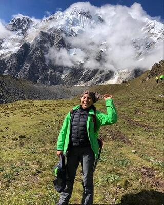

About Me
Today’s digital landscape requires an integrated skill stack capable of engineering optimized, high-converting platforms. As an IT student and incoming graduate scholar at the University of Washington, my goal is to turn complex technical logic into human-centered digital experiences. I bridge the critical gap between back-end infrastructure and frontend marketing execution.
Currently, I am building a rigorous foundation at North Seattle College, mastering HTML, CSS, JavaScript, and DOM manipulation. My coursework focuses on creating robust web interfaces, responsive layout design, structural web logic, and functional code workflows. This hands-on training ensures I can speak the language of engineering teams, seamlessly translating marketing concepts into engineering reality.
This autumn, I am joining the Master of Communication Leadership program at the University of Washington to combine advanced marketing strategies with my programming foundation. This intersection of programming logic and advanced communication prepares me to both manage and implement modern marketing technology architectures. I look forward to thriving in Seattle's tech ecosystem, speaking fluent code with developers and fluent strategy with executives.
To check out the live code repositories and front-end experiments I am actively deploying during my current IT coursework, please explore my live builds on my Projects Page. You can also review my raw source files on my GitHub Profile or connect with me via LinkedIn.
When I am not debugging loops or writing code, I take advantage of Washington's incredible landscape. The region is not only a hub of the tech industry but also a home to glaciers and mountains. Reflecting my background as a trekking guide in Peru, I regularly escape to the mountains to admire nature, find quiet places to recharge, or simply enjoy the sun.